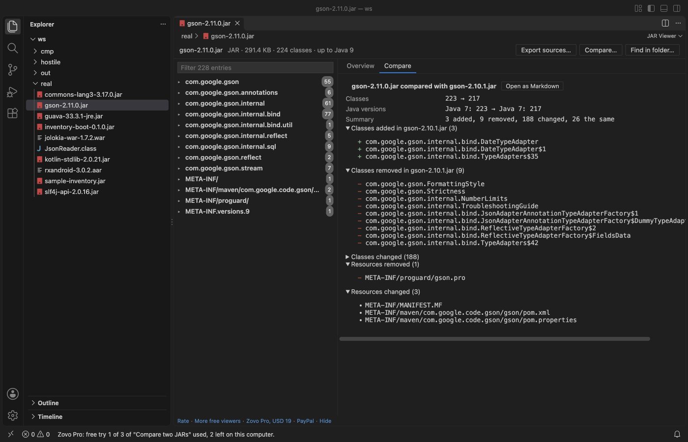

Open files in VS Code and Cursor / Developer files
Compare two JAR files class by class
A plain diff of two JARs only says that binary files differ. JAR Viewer opens both in VS Code for free, and its Compare two JARs tool lists the classes added, removed and changed, and for each changed class the methods and fields added or removed, a changed declaration or Java version, or a note that only the bytecode changed. Resources added, removed and changed are listed too, and the result saves as Markdown. Compare is part of Zovo Pro (USD 19 once), with 3 free tries.
Free, MIT license. Extension ID zovo.zovo-jar-viewer, version 0.1.2. Needs VS Code 1.90.0 or newer.

Steps in VS Code
- Install JAR Viewer from the Marketplace, or press Ctrl+P (Cmd+P on macOS) and run
ext install zovo.zovo-jar-viewer. - Click the first
.jarfile in the Explorer. It opens in JAR Viewer. - Click Compare... at the top of the viewer and pick the second JAR. The Explorer right-click menu has "Zovo Pro: Compare two JARs" too.
- Read the Compare tab. The top rows give the class count and Java versions of both JARs and the number of classes added, removed, changed and the same.
- Open Classes changed to see each class with the methods and fields added or removed. "Same signatures; the bytecode changed." means only code inside methods changed.
- Click Open as Markdown to get the report in an editor tab, for a pull request or a release note.
Where Zovo Pro saves time
Opening a JAR, the package tree, the Overview with Java versions, decompiled source, bytecode, members, constant pool, resources and nested JARs are free, with no limit and no sign-in. You can open two JARs in two tabs and look at them side by side for free.
Checking a library update class by class by hand takes hours. Compare two JARs matches classes by name, compares their CRC, and for each changed class lists methods and fields added or removed with their signatures, plus declaration and Java version changes. It covers resources too. The other Pro tools export all decompiled sources of a JAR and find a class, method or string in every JAR of a folder.
With Compare two JARs (Zovo Pro)
- Click Compare... at the top of the viewer, right-click the JAR in the Explorer and pick "Zovo Pro: Compare two JARs", or run "JAR Viewer: Compare two JARs (Pro)".
- Pick the other
.jar,.war,.earor.aarfile. Escape uses no try. - A try counts only when the tool gives you a result. The status bar says how many tries are left.
Compare two JARs works 3 times on your computer before it asks for a license, and a try counts only when you get a result. Opening a file shows no popup and no countdown.
Zovo Pro costs USD 19 once. It is not a subscription, and it turns on the Pro tools in every Zovo extension, not only JAR Viewer. After a card payment (Stripe) your license key shows on the next page. In VS Code, run "Zovo Pro: Enter Zovo Pro license key" from the Command Palette and paste it. The key is checked on your computer, with no network call. With GitHub Sponsors, pick the "$19 one time" tier, then run "Zovo Pro: I already paid: unlock with GitHub Sponsors" and sign in with the same GitHub account. With PayPal, send USD 19 with "Zovo Pro" in the note and the key comes by email within a day.
A team of 5: USD 59 once, by card or by PayPal. Every rule and every Pro tool is on the Zovo Pro page.
Steps in Cursor, Windsurf or VSCodium
- Open the Extensions view with Ctrl+Shift+X (Cmd+Shift+X on macOS).
- Search for
zovo.zovo-jar-viewerand click Install. Cursor, Windsurf and VSCodium install from Open VSX, where it is published aszovo/zovo-jar-viewer. - If your editor has no gallery, download the .vsix from the Open VSX page and run "Extensions: Install from VSIX...".
- Then use it the same way as in VS Code.
What JAR Viewer handles
.jar,.war,.earand.aarfiles.- Method and field signatures with generics, as Java declarations.
- Classes whose code changed while their signatures stayed the same.
- Resources such as
MANIFEST.MF,pom.xmland properties files.
What it does not do
- Each list stops at 5,000 entries.
- It compares signatures and CRCs. It does not show a line diff of the decompiled source.
- Nested JARs inside the archives are compared as resources, not class by class.
Other options
- japicmp. A free tool that compares the public API of two JARs and reports binary and source compatibility. Runs on the command line or from Maven.
- unzip and diff. List both JARs with
unzip -l, save the lists and diff them. You see file names and sizes, not methods.
Install counts and Open VSX status were checked on 13 November 2026. Descriptions in quotes are the extensions' own.
Questions
What does "Same signatures; the bytecode changed." mean?
The class has the same methods and fields, but code inside at least one method changed. Open the class in both JARs to read the decompiled source.
Can I compare two WAR files?
Yes. .war, .ear and .aar files compare the same way.
Is the compare free?
It has 3 free tries on your computer. After that it is part of Zovo Pro, USD 19 once. Viewing JARs stays free.
Does it work in Cursor or Windsurf?
Yes. Cursor, Windsurf and VSCodium install extensions from Open VSX. Search for the extension in their Extensions view and install it there.
More about JAR Viewer
Read the JAR Viewer page for every feature and setting, or the source code on GitHub.
Related guides
- Open a JAR and read the decompiled Java source in VS Code
- Check which Java version a JAR was compiled for
- Find the Main-Class of a JAR file
- Read a HAR file offline in VS Code
Zovo Pro and support
Zovo Pro: USD 19 once, every Zovo viewer. It turns on the Pro tools in this extension and in the other Zovo extensions you use. The free features stay free.
After a card payment your license key shows on the next page. Paste it with the command "Zovo Pro: Enter a key".
You can also support the work with no Pro:
Need your format supported?
Open a format request with a sample file, and I reply there whether it can be done. For USD 299 once, through this GitHub Sponsors tier, I add your file format or a missing feature to this extension, with tests, within 7 days.